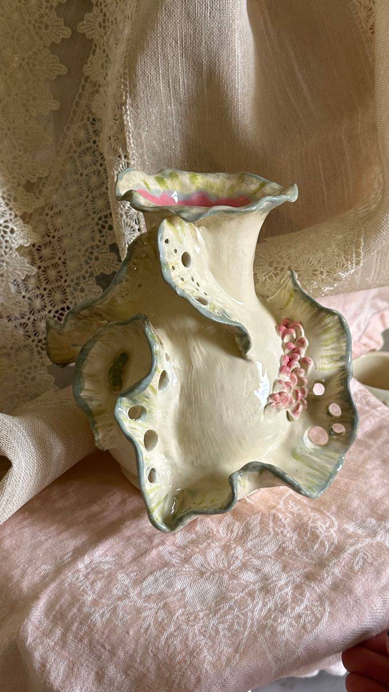
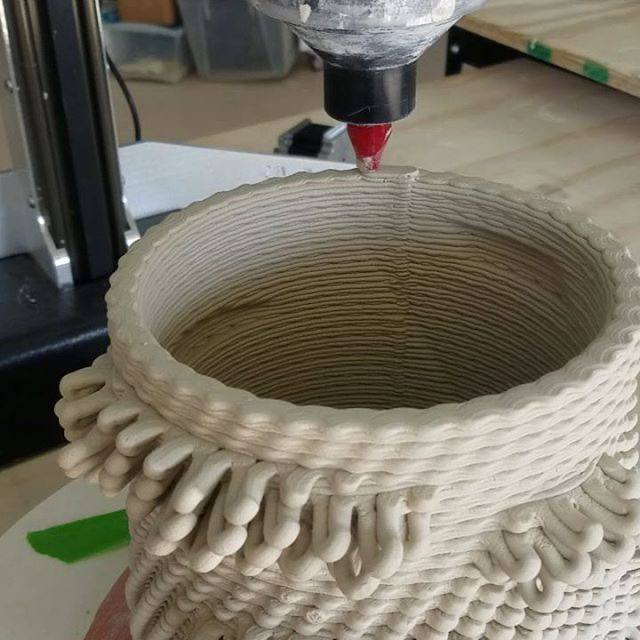

Современные тенденции в керамическом искусстве
Современные дизайнеры и художники по керамике переосмысливают традиционные формы, создавая удивительные произведения на стыке искусства, дизайна и технологий. Рассмотрим ключевые направления, определяющие развитие керамики сегодня.
1. Органический минимализм
Сочетание чистых линий с природными текстурами. Мастера создают геометричные формы с неровными краями, имитирующими естественные сколы. Преобладают природные цвета: терракотовые, охристые, приглушенные зеленые и синие оттенки.
2. Эксперименты с глазурью
Художники разрабатывают новые рецепты глазурей, создающие неожиданные эффекты: кракелюры, переливы цвета, имитацию металлических поверхностей. Особенно популярны "космические" глазури с эффектом глубины и мерцания.
3. Экологичный подход
Использование местных сортов глины, натуральных красителей, энергосберегающих технологий обжига. Многие мастера полностью отказываются от свинцовых глазурей в пользу безопасных аналогов.
Технологии будущего
Современные технологии проникают в традиционное гончарное ремесло. 3D-печать керамикой позволяет создавать сложные структуры, невозможные при ручной лепке. Некоторые художники сочетают керамику с электроникой, создавая интерактивные объекты.
Несмотря на все инновации, современные мастера сохраняют уважение к традициям, часто переосмысливая исторические техники в новом контексте. Это создает удивительный диалог между прошлым и будущим керамического искусства.
← Вернуться ко всем статьям